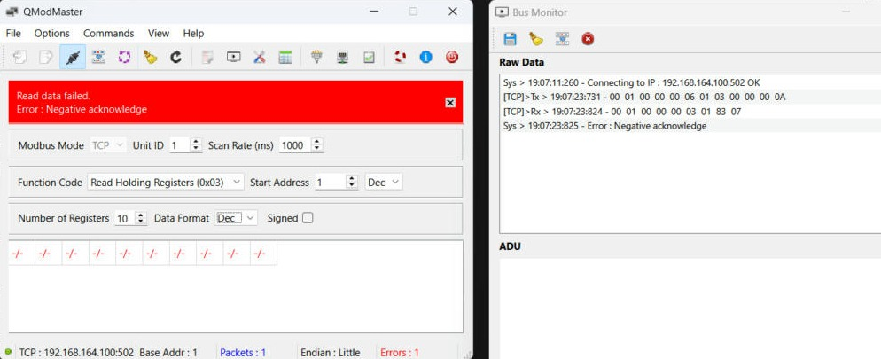
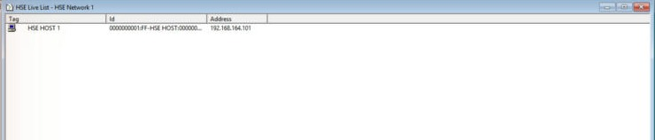
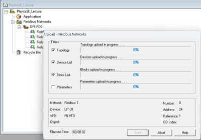
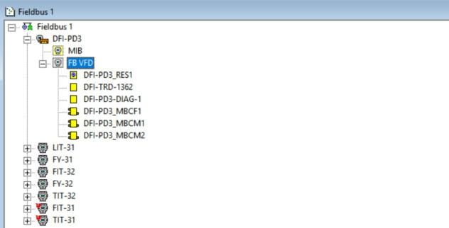
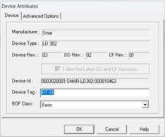
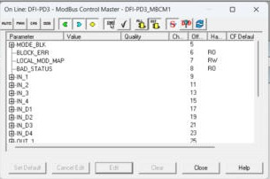

Dossiê técnico · Departamento de Eletroeletrônica · IFMA Monte Castelo
Planta didática PD3-302 rack DFI302 · DF51 & DF65
Tudo o que sabemos sobre o sistema: o processo, o hardware, a rede, o software, a investigação desde 24/10/2026 e a sessão de campo de 16/11/2026 — explicado passo a passo.
RUN
DF51 · controlador Fieldbus firmware V3.7.5 · modo SE
HOLD
DF65 · coprocessador lógico ladder parado
7
instrumentos no canal H1 1 1 sem comissionamento (TIT-31)
192.168.164.100
endereço IP do DF51
1º backup
topologia salva em PlantaSE_Leitura.ffp
0
escritas feitas pela investigação (FIT-31 comissionado pelo operador)
iComo ler este documento
Cada capítulo começa com um resumo em uma frase. Os quadros azuis (Para entender) explicam conceitos; os verdes mostram resultados; os amarelos, cuidados; os vermelhos, bloqueios. Toda conclusão vem marcada como observado, inferido ou desconhecido.
Francisco · Chefe do DEE-MTC · IFMASão Luís, 16 de novembro de 2026
📍Em uma frase: o controlador DF51 está funcionando e já sabemos o que está ligado nele, mas o DF65 está parado e o software atual não consegue ler os valores do processo.
O computador original da planta (System302 7.0.5) não está disponível e não existia backup da configuração. Desde 24/10 o trabalho foi reconstruir o que está instalado sem nunca escrever nos equipamentos.
✓Já confirmado
DF51 (DFI302), firmware V3.7.5, IP 192.168.164.100, modo SE, em RUN.
TIT-31 não comissionado (falha de atribuição de tag às 21:06).
Valores on-line não aparecem no System302 8.2.2.
Sem ferramenta funcional para o DF65 no notebook.
O mapa do problema
Figura 1. Os dois problemas principais que impedem a planta de operar: medições fora da estratégia e o DF65 parado.
!Caminho recomendado
Localizar o PC antigo com System302 7.0.5 (deve ter o programa do DF65 e o software compatível) ou obter orientação da SMAR. Colocar o DF65 em RUN e comissionar o TIT-31 só depois de conhecer o programa e a estratégia.
Capítulo 2
A planta e o processo
💧Em uma frase: é um circuito fechado de água com três tanques, duas bombas, duas válvulas e resistências, usado para ensinar malhas de controle de vazão, temperatura e nível.
Figura 2. Esquema didático do processo (baseado no manual PD3-F). As posições dos instrumentos são inferidas pelos tags e precisam ser conferidas no P&ID da bancada. Em vermelho tracejado: instrumento presente mas não comissionado (TIT-31). FY-32 e FIT-32 ficam na linha de água fria (bomba B2).
As malhas de controle
Tanque de aquecimento: controla a temperatura ligando as resistências, com ajuda antecipada da vazão de entrada.
Tanque de mistura: controle em cascata: a temperatura decide quanto de água fria deve entrar, e uma malha de vazão abre ou fecha a válvula.
iPara entender: como ler um tag
Os tags seguem o padrão ISA: a primeira letra é a variável (F=vazão, T=temperatura, L=nível) e as seguintes dizem a função (I=indicador, T=transmissor, Y=conversor/atuador). FIT-31 = transmissor indicador de vazão, malha 31. FY-31 = conversor que move a válvula da malha 31.
Malha em cascata, passo a passo
Figura 3. Estratégia “Cascade” dos exemplos de fábrica do DF51: a malha de temperatura gera o setpoint da malha de vazão. O FIT-31 (LD302) e o TIT-31 (TT302) da bancada são exatamente esses tipos de instrumento.
Capítulo 3
O rack DFI302
🧩Em uma frase: o rack é modular — o DF51 conversa com a rede e com os instrumentos, o DF65 executa a lógica, e os demais módulos ligam botões, bombas e resistências.
Figura 4. Módulos do rack conforme o inventário informado em 10/11/2026, com os LEDs observados em 16/11: DF51 em RUN e DF65 em HOLD.
Módulo
O que faz na planta
Estado
DF51
“Cérebro” Fieldbus: executa os blocos de controle, comanda o barramento H1 (LAS) e fala com o notebook pela Ethernet.
RUN
DF65
Executa a lógica discreta (ladder): partida de bombas, intertravamentos, sirene. Programado pelo LogicView.
HOLD
DF18/DF19/DF20
Recebem botões e chaves do painel (entradas digitais).
não verificado
DF28
Acionam contatores de bombas e resistências (saídas a relé).
não verificado
DF58
Porta serial RS-232/RS-485.
não verificado
DF52/DF53
Alimentam e condicionam o barramento Fieldbus H1.
não verificado
iPara entender: RUN e HOLD
Em RUN, o módulo executa o programa carregado. Em HOLD, ele está ligado mas parado, sem executar a lógica. Um módulo pode estar em HOLD porque alguém o parou, porque falhou na inicialização ou porque perdeu o programa (por exemplo, bateria da memória descarregada). Saber o motivo é essencial antes de tentar voltar para RUN.
Capítulo 4
Como tudo se conecta
🔌Em uma frase: o notebook fala com o DF51 por Ethernet; o DF51 fala com os instrumentos por um único par de fios (H1) e com o DF65 por Modbus.
Figura 5. Arquitetura confirmada em 16/11/2026 (estado das 21:22: FIT-31 já comissionado). A ligação Modbus DF51→DF65 aparece cortada porque o DF65 está em HOLD. A função de cada instrumento é inferida pelo tag.
iPara entender: FOUNDATION Fieldbus H1
Em vez de um par de fios 4–20 mA para cada instrumento, todos compartilham o mesmo par de fios, que leva energia e dados digitais. Cada instrumento tem um endereço e “blocos de função” (entrada, PID, saída). O DF51 agenda quem fala em cada instante — essa função se chama LAS (Link Active Scheduler).
Parâmetro
Valor
IP do DF51
192.168.164.100
MAC
00:30:5C:01:05:52
Firmware
V3.7.5 (manual atual: V3.9.5)
Anúncio
UDP 4987, broadcast a cada ~30 s
Marcadores
“DF51V3.7.5” · “Monitor 3302”
Porta 502
aberta; só Unit ID 1 responde
PC antigo
192.168.164.101 (System302 7.0.5)
!Firmware: não atualizar para testar
O manual atual da SMAR lista o DF51 V3.9.5 como compatível com o System302 7.0 a 8.2. A bancada usa V3.7.5, uma revisão antiga — por isso o System302 8.2.2 do notebook lê só parte das informações. Atualizar o firmware pode apagar a configuração, e não existe backup do programa do DF65.
Histórico: em 29/10 o operador identificou o controlador como “DF63” em 192.168.164.10; esse endereço nunca respondeu. As capturas e testes posteriores confirmaram o DF51 em .100.
Capítulo 5
O software
🖥️Em uma frase: o System302 8.2.2 do notebook consegue ver a estrutura da planta, mas não os valores nem o DF65 — falta a versão compatível (7.0.5) ou os pacotes certos.
O que funciona e o que não funciona
Studio302 / Syscon ok
Abre o projeto, vai on-line e faz upload da topologia. O Syscon só abre pelo Studio302.
DFIOLEServer parcial
Enxerga o DF51 (SE) e lê topologia e blocos. Não devolve valores on-line.
HSEOLEServer não serve
Funciona, mas só vê redes HSE. O DF51 é SE.
TagView parcial
Conecta, mas só mostra diagnósticos. Falta o banco de tags (Consolidate OPC bloqueado).
LogicView DF65 off
Opção “DF65 Logic” desabilitada.
DF65Server erro
Inicia, mas “Error connecting to OPC server”: sem rota nem tags.
FB Tools Wizard não usar
Só oferece download de firmware para o DF51.
QModMaster ok
Mestre Modbus de teste (0.5.3). Confirmou a porta 502 do DF51.
PlantaFieldbus simulação
Aplicativo próprio, com escrita bloqueada por projeto.
SE e HSE: por que o DF51 “sumiu” no começo
Figura 6. O mesmo Syscon com dois servidores. Na linha DFI302, o DF51 pode rodar firmware HSE (Fieldbus sobre Ethernet, padrão da Fieldbus Foundation) ou SE, acessado pelo servidor DFI OLE da SMAR. O projeto antigo estava montado para HSE — por isso o controlador não aparecia.
Projetos no Syscon
Projeto
Conteúdo
Observação
PlantaSE_Leitura
DFI-PD3, 4 canais, 7 instrumentos, blocos
backup de 16/11, 19:51
PlantaDidatica
HSE Network 1 vazia
não enxerga o DF51
PlantaDidaticaSE
não aberto
origem desconhecida (16/11, 16:57)
DF51_SE.ffp / DF51_HSE.ffp
exemplos de fábrica (2006), estratégia “Cascade”
só referência offline
Capítulo 6
O projeto PlantaFieldbus
🛠️Em uma frase: um repositório aberto para construir uma interface própria da planta, que começa em simulação e só se liga ao equipamento depois de cada etapa ser comprovada.
Interface WPF (.NET 8)
Painel, sinótico, eventos, importação de topologia, descoberta UDP passiva e simulação da cascata do DF51. Adaptadores OPC/Modbus/HSE existem só como contratos inativos.
Protótipo Flutter
Versão anterior para Windows, preservada. 6 testes offline passando.
Scripts PowerShell
Captura passiva (PktMon/TShark), manifesto SHA-256, resumo de PCAP, triagem estática e um pipeline que processa tudo sem enviar pacotes.
Documentação
Processo, módulos, perfil Fieldbus, hipótese de protocolo, roteiro de visita, registro de evidências e pedido à SMAR.
As fases e os portões
Figura 7. Fluxo de investigação do repositório. A fase 4 só começa depois que uma pessoa aprova uma fonte técnica verificável.
!Regras de segurança (AGENTS.md)
Sem varredura, alteração de rede ou comandos ao PLC durante a investigação.
Mudar RUN/HOLD só em comissionamento separado, com: autorização para o controlador, protocolo validado, backup verificado, E/S e intertravamentos revisados, operador no local com parada de emergência ao alcance e procedimento de teste registrado.
Capturas, binários, licenças e dados de processo ficam fora do repositório público.
✓Como foi a sessão de 16/11
Os testes ativos de hoje (QModMaster, Syscon on-line, upload) foram somente de leitura, autorizados e acompanhados pelo operador na bancada. Nenhum passo escreveu em equipamento.
Capítulo 7
A investigação, do início a hoje
🗓️Em uma frase: em pouco mais de três semanas, saímos de “há um equipamento na rede” para a árvore completa de instrumentos e blocos da planta.
Data
O que aconteceu
24–25/10
Criação do repositório: kit de captura passiva, fluxo de agentes, triagem estática, console simulado, arquitetura de adaptadores seguros, perfil provisório SMAR PD3.
26–27/10
Captura com PktMon/TShark, análise de PCAPNG sem dependências, decodificador de anúncios UDP, interface WPF, pipeline seguro de evidências.
28/10
System302 8.2.2 SP1 instalado (só engenharia). Primeira captura: anúncio DF51V3.7.5 / Monitor 3302. Identificada a DLL DeviceNet da Hilscher.
29/10
Validação em campo: 232 quadros, ping para .100 em 7 ms, ARP com o mesmo MAC, HTTP sem resposta. Registro do “DF63” em .10 (sem resposta).
10/11
Inventário do rack; papéis DF51/DF65; análise do dfbatch.exe (RUN/HOLD via Telnet); exemplos de fábrica.
11/11
Captura de 5 min validada; NetConfDownloader classificado como ferramenta de escrita; matriz de evidências; compatibilidade V3.7.5 × V3.9.5; busca de backup sem sucesso; rascunho à SMAR; simulação da cascata.
16/11
Sessão de campo: Modbus TCP, descoberta do modo SE, upload da topologia, backup, diagnóstico de instrumentos, OPC e DF65. PRs #3, #4 e #5.
Análise estática dos programas da SMAR
Arquivo
O que revelou
dfbatch.exe
Script Python 2.5 interno; RUN/HOLD por Telnet (porta 23) com autenticação. A lista de equipamentos aceitos não inclui o DF51.
FbusComm.dll
Funções de leitura (LiveList, ReadParameter) e de escrita (WriteParameter, ChangeBootOperational).
NetConfDownloader.exe
Connect/Download para AS-i e Modbus: ferramenta de escrita, excluída da recuperação.
DfiDiver.exe
Reconhece arquivos DF51*.abs e escrita de memória; sem RUN/HOLD.
DEVNet.dll
Biblioteca DeviceNet da Hilscher, versão 2.6.9.8.
Capítulo 8
Sessão de campo de 16/11/2026
🔎Em uma frase: operando o notebook remotamente com o operador na bancada, lemos o DF51 por três caminhos diferentes até descobrir como ele está configurado.
8.1 Primeiro teste: Modbus TCP com o QModMaster

Figura 8. Tela real: o QModMaster conecta ao DF51, mas a leitura volta com “Negative acknowledge”. À direita, o Bus Monitor mostra os bytes trocados.Figura 9. Anatomia dos quadros Modbus TCP. O DF51 entendeu o pedido, mas recusou o serviço. Ele nunca respondeu “02 – endereço inválido”, o que mostra que o problema não era o endereço.
Unit ID
Função
Endereço
Resposta
1
FC03 holding registers
0 e 1000
83 07
1
FC01 coils
0
81 07
1
FC04 input registers
0
84 07
0 e 255
FC03
0
timeout
8.2 Por que o DF51 recusou: dois mestres não conversam
Figura 10. Num barramento Modbus, só o escravo responde. O DF51 foi configurado para perguntar (provavelmente ao DF65), não para responder.
iPara entender: Modbus mestre e escravo
No Modbus, um mestre faz perguntas (“me dê os registros 0 a 9”) e um escravo responde. Cada escravo tem um número (Unit ID). Um equipamento configurado só como mestre não responde a perguntas de outro mestre — foi exatamente isso que o QModMaster encontrou.
8.3 Segundo caminho: o Syscon


Figura 11. À esquerda, a Live List HSE mostra só o próprio notebook. À direita, com o servidor SE, o upload encontra o DFI-PD3 e começa a ler o LIT-31.
8.4 O que o upload encontrou

A árvore do canal H1 1 mostra o DF51 (“DFI-PD3”) com seus blocos e os sete instrumentos.
RES1: bloco de recursos do equipamento.
TRD-1362, DIAG-1: transdutor e diagnóstico.
MBCF1: configuração Modbus.
MBCM1, MBCM2: Modbus Control Master.
O FIT-31 e o TIT-31 aparecem com marca vermelha e sem blocos.
Figura 12. Tela real do upload: os blocos MBCM explicam a exceção 07.
8.5 FIT-31 e TIT-31: presentes, mas fora da estratégia
FIT-31
TIT-31
Tipo
Smar LD302
Smar TT302
Mede
pressão diferencial → vazão
temperatura
Rev.
03/02/01
03/02/01
ID
…SMAR-LD302:000810463
…SMAR-TT302:004808101
Comissionado
não → sim, 21:11
não
iPara entender: comissionar
Comissionar é gravar no instrumento seu tag e endereço definitivos para que o controlador o inclua no ciclo da rede. Sem isso o instrumento responde no barramento, mas seus blocos não participam do controle. Como grava no equipamento, não foi feito.

Figura 13. Atributos do FIT-31 lidos no Syscon: fabricante, tipo, revisões e Device ID.
↻Atualização das 21:00–21:22
FIT-31 comissionado pelo operador (projeto salvo às 21:11). On-line, a marca vermelha sumiu e o menu passou a oferecer Decommission, Upload e Download.
TIT-31 continua não comissionado: o log registra Assign tag failure — TIT-31 às 21:06.
O upload do FIT-31 (blocos + parâmetros, só leitura) terminou com Block creation failure during upload: os blocos do LD302 também não são criados no System302 8.2.2.
8.6 Os valores não aparecem

Ao abrir os blocos em modo on-line (MBCM1, LIT-31_AI1), o Syscon lista todos os parâmetros — MODE_BLK, PV, OUT, escalas, limites — mas a coluna Value fica vazia, mesmo após “Refresh all parameters value”.
O caminho alternativo, ler por OPC no TagView, depende do Consolidate OPC Database, que falhou com Write access denied to user … mesmo como administrador e com permissão na pasta da SMAR.
Figura 14. Bloco MBCM1 aberto on-line: parâmetros listados, valores em branco.
8.7 O DF65
!Sem caminho de software no notebook
LogicView 8.2.2: opção “DF65 Logic” desabilitada.
Smar.DF65Server.1 inicia com janela vazia; o TagView recebe “Error connecting to OPC server”.
Nenhuma outra ferramenta oferece RUN para o DF65; o FB Tools só faz download de firmware.
O pedido de colocar o DF65 em RUN não foi executado: não há ferramenta, não se sabe se o programa existe e não se conhece o que ele aciona.
Capítulo 9
Diagnóstico
🧠Em uma frase: a estrutura da planta está íntegra; o que falta é o programa do DF65, o comissionamento de dois instrumentos e um software compatível para ler valores.
Figura 15. Cadeia de causas: três problemas na raiz (à esquerda) e seus efeitos na planta (à direita).
Classe
Conclusão
observado
DF51 V3.7.5 em RUN, modo SE, em 192.168.164.100.
observado
DF65 em HOLD.
observado
7 instrumentos no canal 1; canais 2–4 vazios.
observado
TIT-31 não comissionado (“Assign tag failure” às 21:06). FIT-31 comissionado às 21:11, mas o upload não cria seus blocos.
observado
Blocos MBCF1, MBCM1, MBCM2 no DF51; exceção 07 a mestre externo.
observado
Valores on-line não retornam no System302 8.2.2.
inferido
O DF51 é mestre Modbus do DF65; com o DF65 em HOLD, essa troca falha.
inferido
A malha que usa o TIT-31 está sem medição.
inferido
Falta de valores por incompatibilidade 8.2.2 × V3.7.5 (device support).
desconhecido
Por que o DF65 está em HOLD; se o programa ladder ainda existe.
desconhecido
Parâmetros dos MBCM (escravo, endereços, status).
desconhecido
Estratégia completa e P&ID instalado.
desconhecido
Causa do acesso negado no Consolidate OPC.
desconhecido
Conteúdo do projeto PlantaDidaticaSE.
Capítulo 10
Próximos passos
🧭Em uma frase: primeiro tudo o que é leitura; só depois de passar pelo portão de segurança, comissionar instrumentos e colocar o DF65 em RUN.
Figura 16. Roteiro. Os passos 1 a 7 só leem informações; os passos 8 e 9 alteram equipamentos e dependem do portão de segurança.
★Mais promissor: o PC antigo
Ele deve ter, de uma vez, o projeto ladder do DF65, o device support compatível com o V3.7.5 e o servidor OPC já configurado. Com ele, dá para ler o programa antes de qualquer RUN.
!Antes de qualquer escrita
Backup verificado · programa e estratégia conhecidos · E/S e intertravamentos revisados · operador no local com parada de emergência ao alcance · procedimento registrado.
Anexo A
Glossário
Bloco de função
Pedaço de software dentro de um instrumento ou controlador (AI = entrada analógica, PID = controle, AO = saída).
CAS_IN
Entrada de setpoint de um PID usada no controle em cascata.
Comissionar
Gravar tag e endereço definitivos num instrumento Fieldbus para incluí-lo na rede de controle.
Device support / DD
Arquivos que descrevem os parâmetros de um equipamento para o software de configuração.
DFI302
Família de controladores modulares da SMAR para FOUNDATION Fieldbus.
Download / Upload
Download envia configuração ao equipamento (escrita). Upload traz do equipamento para o PC (leitura).
H1
Barramento FOUNDATION Fieldbus de campo, 31,25 kbit/s, dois fios com energia e dados.
HSE
High Speed Ethernet: FOUNDATION Fieldbus sobre Ethernet.
LAS
Link Active Scheduler: quem organiza a vez de falar no barramento H1 (aqui, o DF51).
Live List
Lista dos equipamentos que respondem na rede naquele momento.
MBCF / MBCM
Blocos Modbus do DF51: configuração e Control Master (mestre).
Modbus
Protocolo industrial mestre/escravo; o TCP usa a porta 502.
OPC
Padrão para que programas leiam dados de equipamentos industriais por um “servidor”.
RUN / HOLD
Executando o programa / ligado mas parado.
SE
Variante de firmware do DF51 acessada pelo servidor DFI OLE da SMAR.
Syscon
Configurador de estratégias Fieldbus do System302.